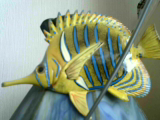

Alex Walsh
Kerbal Space Program:
High performance control surfaces:
This mod adds new versions of Elevon 1, 2, 3, 4, and 5 with faster movement and greater aerodynamic effect.
Download
Misc. Parts:
This mod adds a mk1 to mk2 bicoupler and a mk2 to mk4 quadcoupler.
Download
MATLAB:
LiDAR visualizer:(
This is an .exe that allows you read data from the Garmin Lidar-Lite V3 through I2C pins on an arduino. Data can be exported to a .txt file.
Note: the MATLAB runtime environment is required to use this application, and it can be downloaded for free from mathworks.
Download

Download fish image